LIWA
Let the desert challenges begin.Campaign by AntBrush · Executive Creative Director: Antoni Gerges
A festival at the foot of a 984-foot dune. I led the campaign, the brand and the six zones we built under it.
Read more
Liwa International Festival 2020 ran at Tal Moreeb, Abu Dhabi, from 26 December 2019 to 10 January 2020: sixteen days at the foot of a 984-foot dune, four hours from Dubai.
Client: Abu Dhabi Sports Council. AntBrush was the main agency, on a US$1 million festival contract: the campaign, the brand and the six commissioned zones.
Three routes went to the client on 18 November 2019. The client chose the letters: LIWA, the size of dunes, with every sport bursting out of them.
The scenes are modelled from the campaign’s own artwork and working files. In the key visual the racers stand in front of the letters, not on them.
The road in: one billboard, 14 ft 9 in × 11 ft 6 in, then lamppost banners, 4 ft 11 in × 9 ft 10 in, one line each. The sign system has nine panels and 24 zone icons.
The Liwa Land gate is a 3D model made for this portfolio. Its pieces are at the sizes written on our drawing; the arch is an estimate. The dune is about 50° steep and modelled at 1:20; the master plan beside it is not to scale.
In the festival’s own figures: 252,006 visitors, up 68% on the edition before. 16 days, 14 competitions. 100+ radio adverts, and 50+ on billboards and buses. 455 Arab media outlets contacted, and 25 foreign. 29 sponsors.
Source: the festival media committee’s report, March 2020. Visitors are its estimate: at least three people for each of 84,002 vehicles counted.
The festival, its competitions and the dune belong to Abu Dhabi Sports Council and Liwa Sports Club.
First, on paper.
Three routes went to the client. They chose the letters.
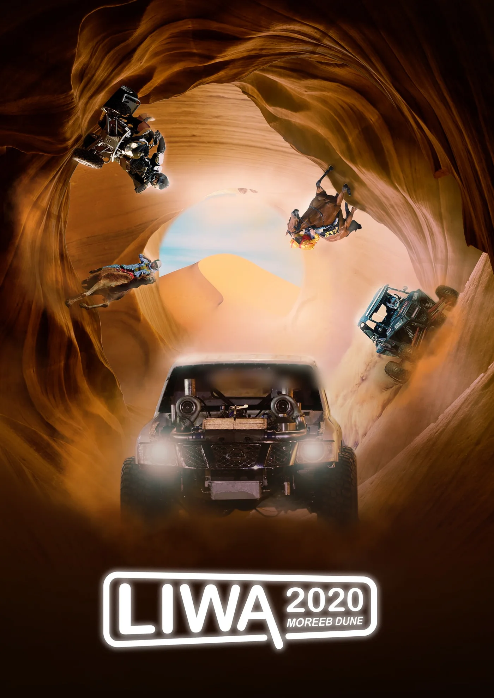
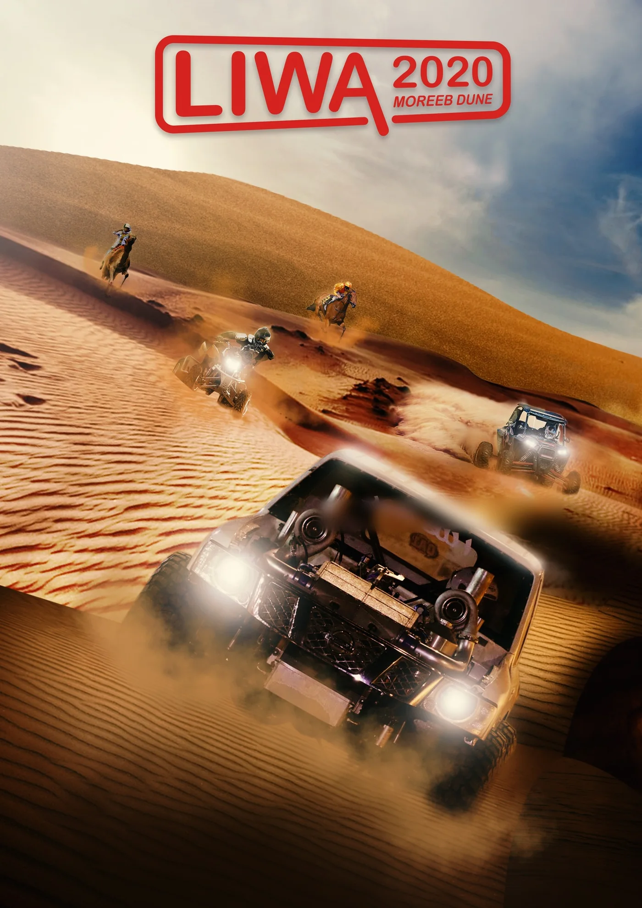
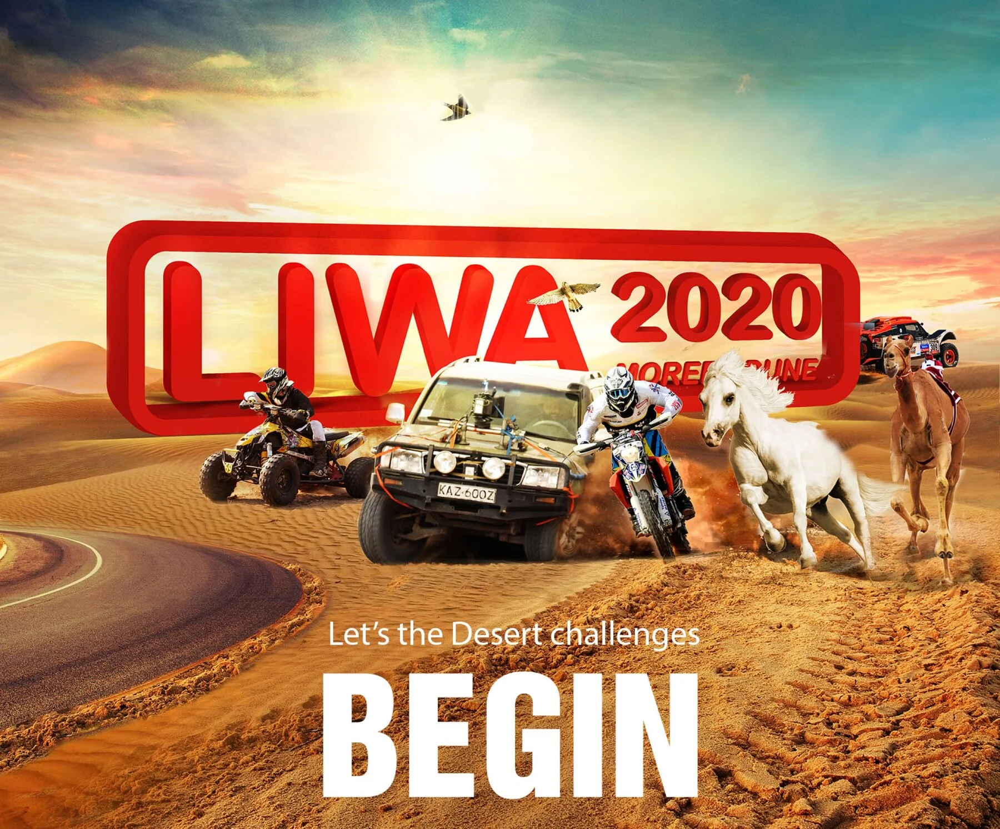
Then the campaign,
in space.
Each scene, then the artwork as it went out.
Letters the size of dunes
The key visual in space: its letters and racers at the foot of the dune.
The road in
One billboard, then the lampposts, one line each.
The signs
One sign system for a town built in weeks.
Liwa Land
A children’s zone, entered through a gate built like a toy cinema.
The dune
A wall of sand, with the festival at its foot.
The screen
The TV commercial, on a model of the site’s big screen.
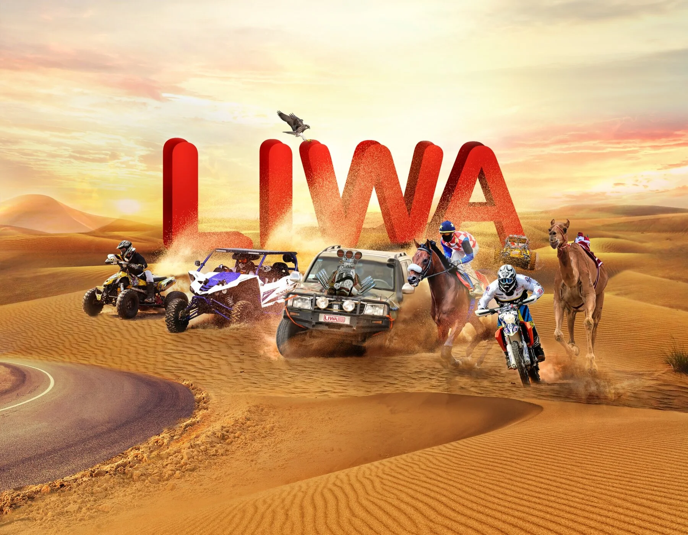
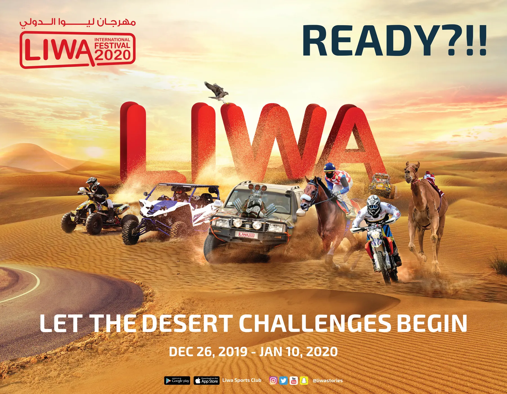
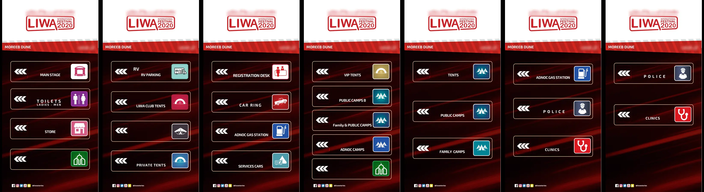
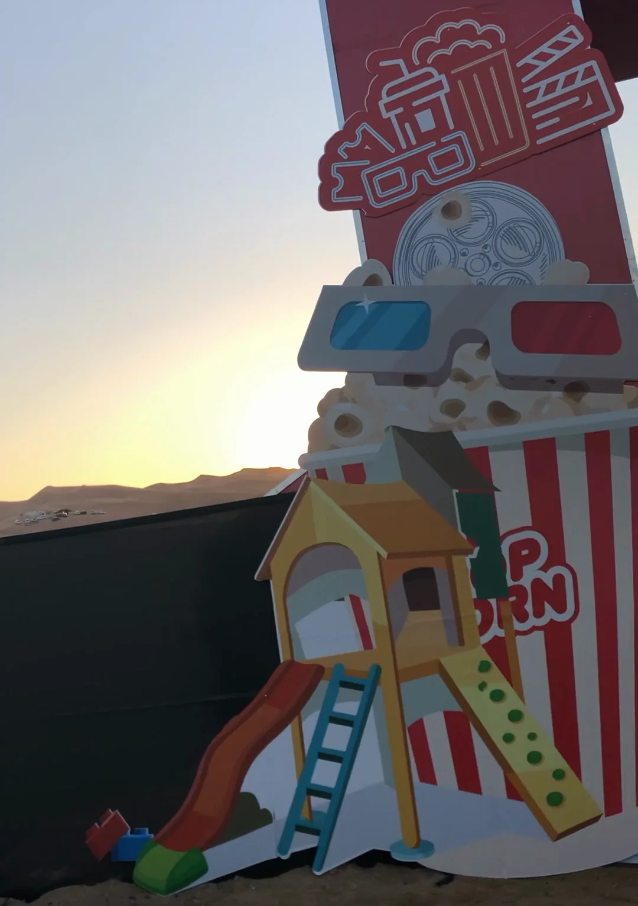
Released.
03 · The finished campaign · the TV commercial · 1:01 · as released · AntBrush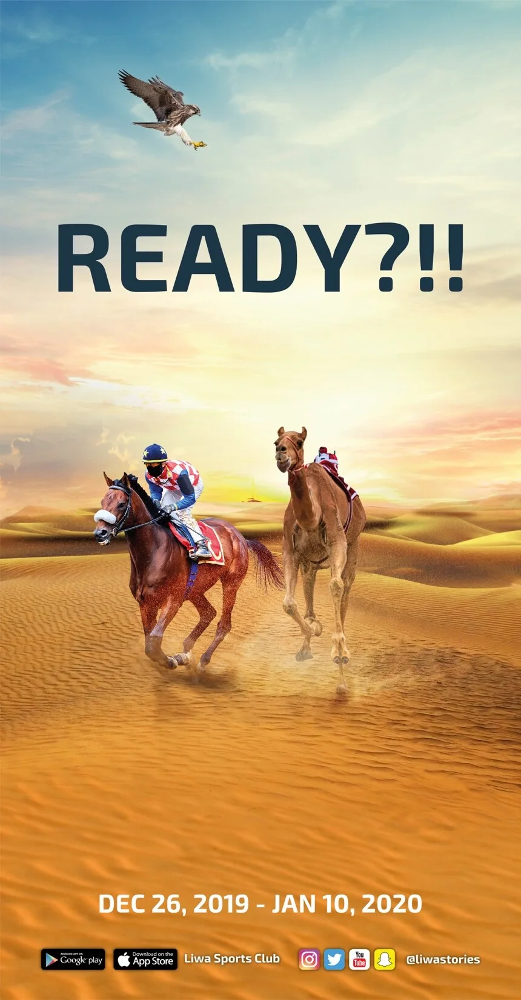
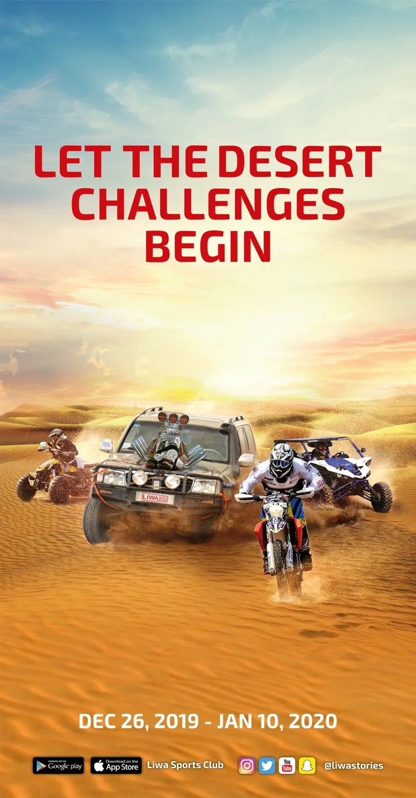
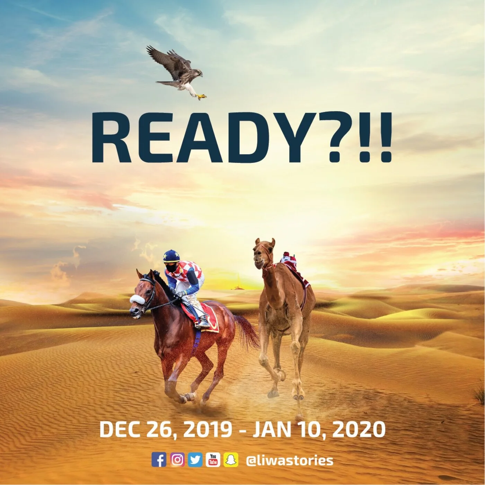
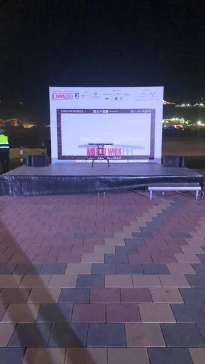
Context only · on site, 1 January 2020 · photographThe result.
04 · In the festival’s own figuresSource: the festival media committee’s report, March 2020. Its estimate.
More figures
Visitors are the report’s estimate: at least three people for each of 84,002 vehicles counted.
21 December.
Layali Moreeb, the desert café: its own gate, under the dune.Phone video · on site
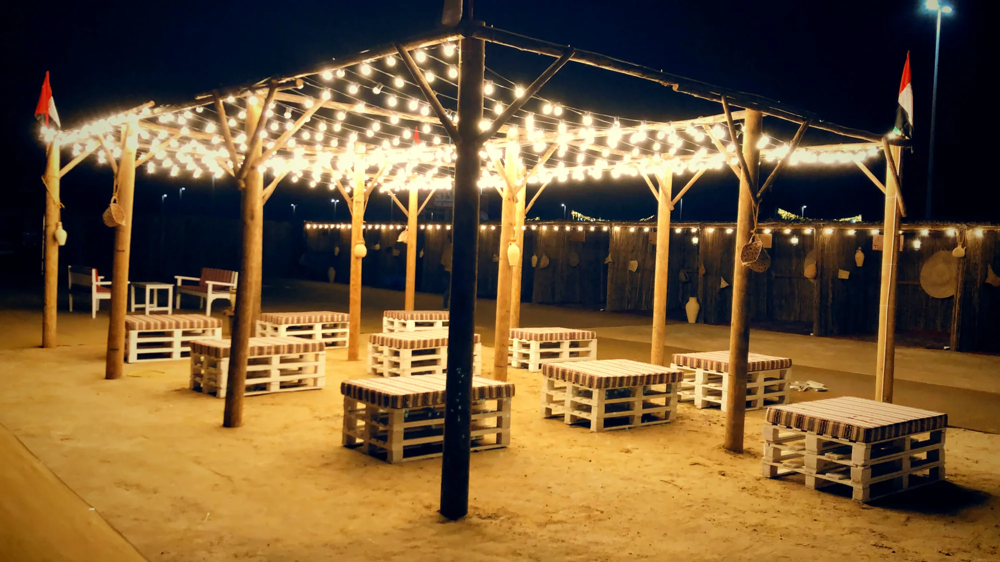
On site, dated · 02 / 0226 December.
Opening night. The pergola, lit.Photograph · 00:40
Executive Creative Director
A US$1 million festival contract.
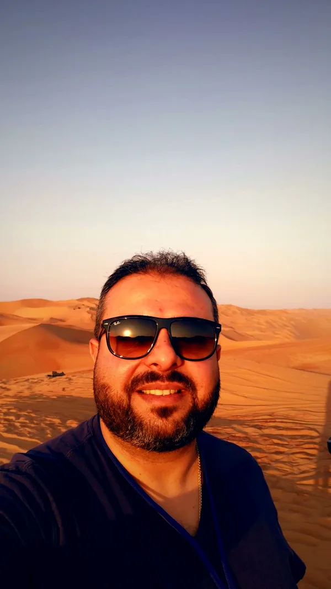
3 January 2020